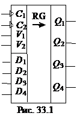

1. КЛАССИФИКАЦИЯ РЕГИСТРОВ
Регистр - это последовательностное устройство, предназначенное для записи, хранения и (или) сдвига информации, которая поступает и хранится в регистре в виде п-разрядных двоичных чисел. В общем случае регистр может выдавать информацию в последовательной или параллельной форме, преобразовывать прямой код числа в обратный (когда единицы заменяются нулями, а нули - единицами), и наоборот, а также выполнять логическое сложение и логическое умножение двоичных чисел.
В зависимости от способа ввода и вывода разрядов числа различают регистры параллельные, последовательные и параллельно-последовательные. В параллельном регистре ввод и вывод всех разрядов кодового числа осуществляется одновременно, в последовательном - разряды числа вводятся и выводятся последовательно, а в параллельно-последовательном регистре ввод числа производится в параллельной форме, а вывод - в последовательной, и наоборот. Преобразование параллельного кода в последовательный и наоборот – очень актуальная задача, так как передача цифровой информации в сетях передачи данных осуществляется в последовательном коде, а обработка её в микропроцессорах вычислительных устройств – в параллельном.
Регистр, в котором можно осуществить сдвиг числа, называют сдвигающим (сдвиговым), причем сдвиг может быть или в одну сторону (в сторону младшего разряда - прямой (правый) сдвиг, или в сторону старшего разряда – обратный (левый) сдвиг, или в обе стороны (реверсивный сдвигающий регистр). В этом смысле последовательный и параллельно-последовательный регистры относят к сдвиговым.
Отечественная промышленность выпускает многие типы регистров в виде микросхем. В качестве примера на рис. 33.1 приведено изображение четырехразрядного регистра (микросхема серии К155). При V2 = 0 разряды числа вводят последовательно в регистр через вход V1; синхроимпульсы, поступающие на вход С1, обеспечивают сдвиг вправо разрядов числа; регистр работает как сдвигающий. В микросхеме (см. рис. 33.1) предусмотрен также параллельный ввод всех разрядов числа по синхроимпульсу на входе С2 с входов D1, …, D4 при V2 = 1. В данном случае регистр работает как параллельный.
Если выводы последнего триггера сдвигающего регистра соединить с входами первого, то получится кольцевой регистр сдвига, называемый кольцевым счётчиком. Его коэффициент пересчёта равен числу разрядов п: единица, записанная в один из разрядов, периодически появляется на выходе счётчика после того, как пройдут п сдвигающих синхроимпульсов.